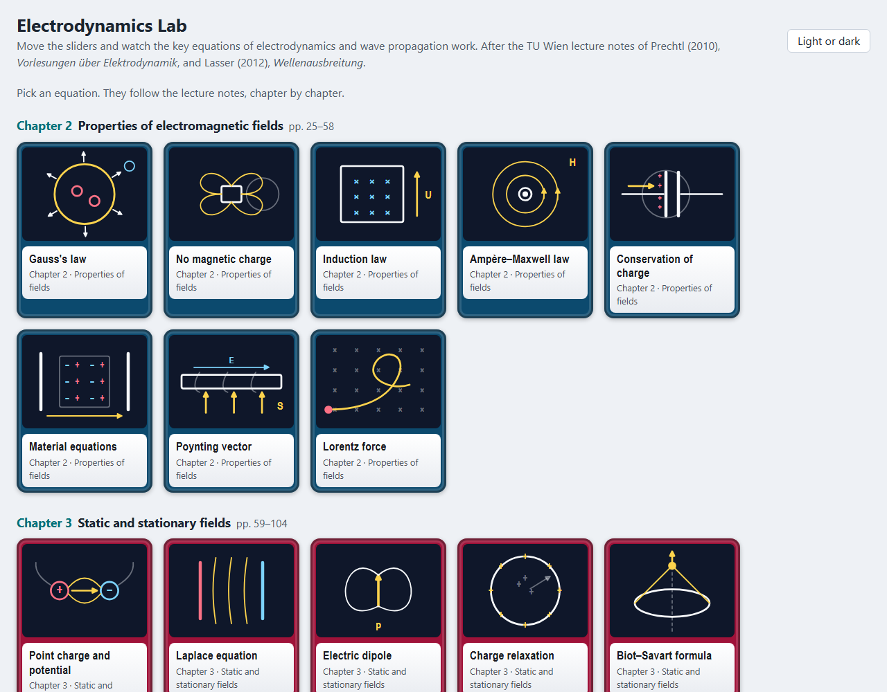
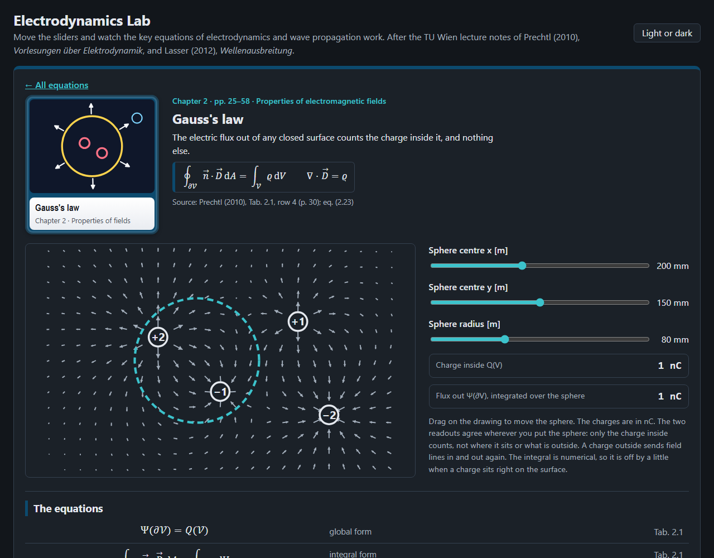
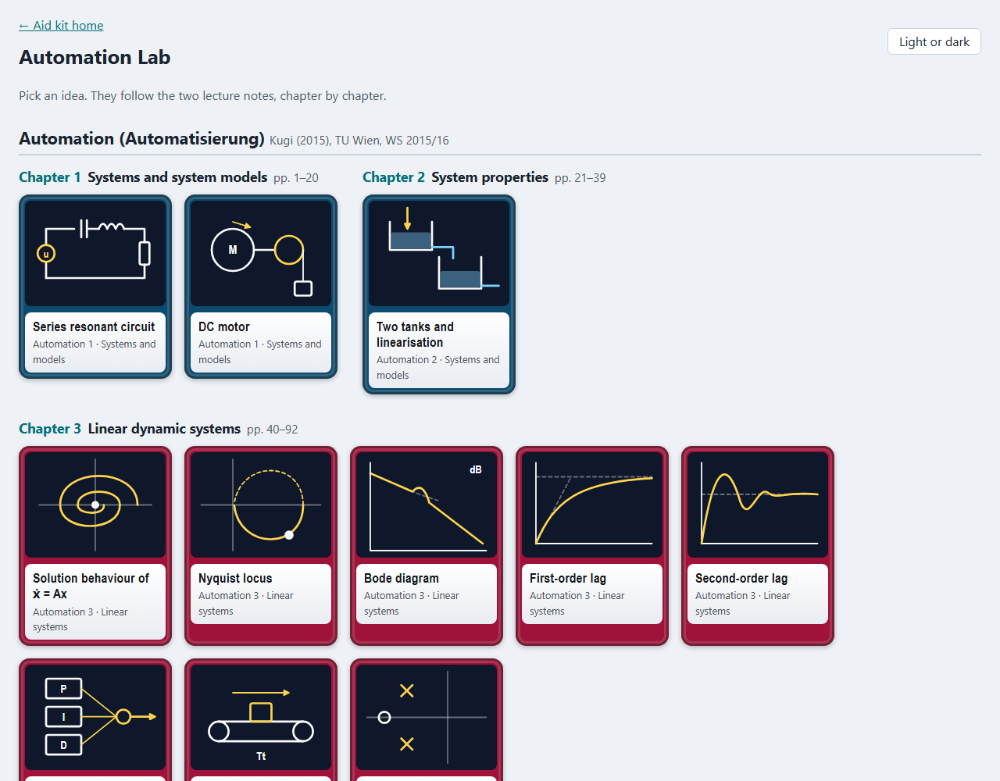
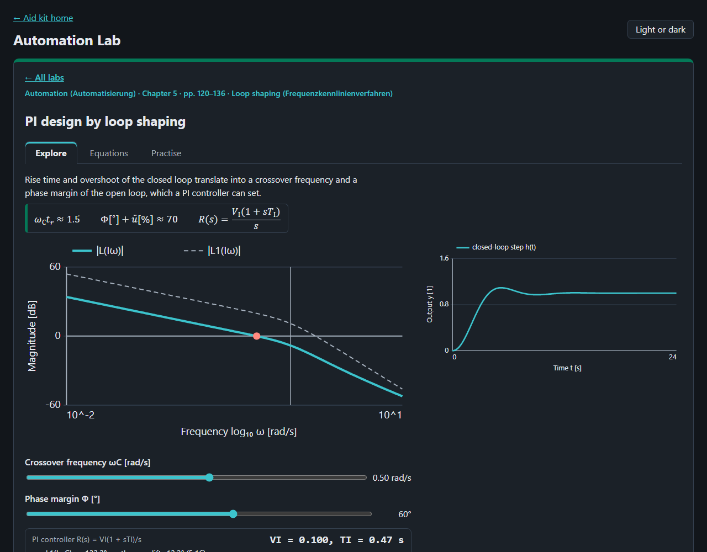

Electrodynamics Lab
Elektrodynamik and Wellenausbreitung, after Prechtl (2010) and Lasser (2012)


Maxwell's equations, potentials, the skin effect, waves, lines, waveguides, antennas, link budgets and fading.
Automation Lab
Automatisierung and Modellbildung, after Kugi (2015) and Kugi et al. (2015)


Transfer functions, Bode and Nyquist, the control loop, state space, sampling, and the models of mechanics and heat.